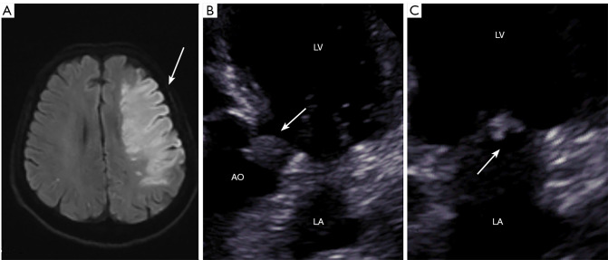
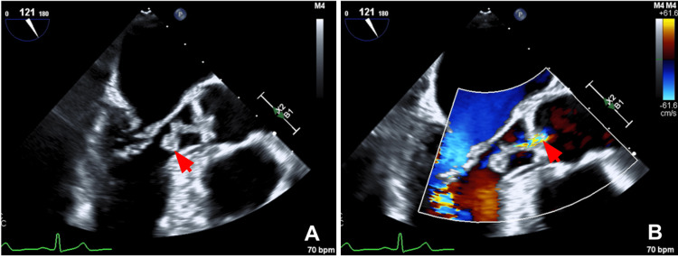
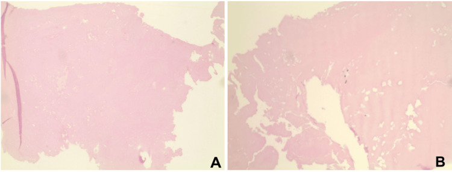

1712 — Trousseau thể ĐỘNG MẠCH: nhồi máu não nhiều ổ & viêm nội tâm mạc không nhiễm khuẩn (arterial Trousseau / NBTE)
Tags: pattern:nhoi-mau-nao pattern:nhieu-o pattern:vegetate vung:nao vung:tim score:TOAST protocol:MRI-DWI protocol:TEE protocol:PET-CT incidentaloma:khong
Mức chắc chắn (certainty): tổng hợp y văn (literature synthesis) — 1 phân tích hệ thống 163 bệnh nhân NBTE (Anatol J Cardiol 2022, PMC9623215, CC BY-NC 4.0), 1 tổng quan cơ chế/điều trị đột quỵ do ung thư (J Stroke 2024, PMC11164583, CC BY-NC 4.0), 1 tổng quan hệ thống 82 nghiên cứu về đột quỵ do rối loạn đông máu do ung thư (J Neurol 2026, PMC13590450, CC BY 4.0), 1 ca nguyên văn có ảnh TEE + mô bệnh (Cureus 2026, PMC13020894, CC BY 4.0), 1 loạt 3 ca Trousseau–NBTE có ảnh MRI/TEE (Quant Imaging Med Surg 2026, PMC12971317, CC BY-NC-ND 4.0) và 1 ca NBTE có TTE âm/TEE dương (Cureus 2026, PMC13566118, CC BY 4.0). Nhóm không có bệnh nhân của mình; chỗ số liệu bài gốc không nhất quán được ghi rõ.
Câu chốt: ở bệnh nhân ung thư, đột quỵ nhiều ổ ở nhiều lãnh thổ mạch không phải "đột quỵ thông thường" — đó là thuyên tắc rải rác từ một nguồn tim: NBTE chiếm 20–25% các tai biến mạch máu não ở người ung thư và được tìm thấy 1,2% trong tử thiết (PMC9623215). Ba số phải thuộc: (1) 30% tử vong trong viện ở 163 ca NBTE (PMC9623215); (2) NBTE có 80% tử vong và 50% tái phát đột quỵ trong 6 tháng (PMC11164583 dẫn y văn); (3) enoxaparin tái phát 3,4% (1/29) so với warfarin 16,0% (8/50) và D-dimer giảm 3,88 so với 17,42 µg/mL (p = 0,026) (PMC11164583). Nghĩa là: nghi NBTE → làm TEE (không phải TTE) → tìm ung thư ẩn → kháng đông bằng LMWH, không chờ cấy máu.
1. Tổng quan bệnh học – cơ chế hình ảnh
1.1 Vì sao "vegetate vô khuẩn" lại gây thuyên tắc — và vì sao cấy máu âm
- NBTE (nonbacterial thrombotic endocarditis, còn gọi marantic endocarditis) là cục huyết khối tiểu cầu–fibrin vô khuẩn bám trên đường đóng của van (line of closure), nơi dòng chảy xoáy + tổn thương nội mạc do cytokine/kháng thể. Bệnh nền hay gặp: ung thư (~80% ca NBTE), hội chứng kháng phospholipid (APS) và lupus (SLE) (PMC9623215).
- Vì tổn thương không có bạch cầu/vi khuẩn, bệnh nhân không sốt điển hình và cấy máu âm — khác hoàn toàn viêm nội tâm mạc nhiễm khuẩn (IE). Mô bệnh của ca Weber: khối fibrin đồng nhất, không tế bào, không viêm, không vi sinh vật (PMC13020894, Fig. 2).
- Nhưng cục huyết khối rất giòn (friable): bong ra thành nhiều mảnh nhỏ → nhiều ổ nhồi máu ở nhiều lãnh thổ khác nhau cùng lúc. Đây là cơ chế vật lý của dấu hiệu "nhiều ổ": một động mạch không thể tạo ra hai ổ nhồi máu ở hai bán cầu và hai hệ tuần hoàn (trước + sau) cùng một thời điểm.
- TẠI SAO DWI sáng: thiếu máu cấp → bơm Na⁺/K⁺-ATPase thất bại → phù độc tế bào (cytotoxic edema) → nước chuyển nội bào → khuếch tán bị hạn chế: DWI tăng tín hiệu, ADC giảm. Tổn thương < 4,5 giờ đã dương trên DWI, trước khi T2/FLAIR đổi tín hiệu; vì vậy DWI là bản đồ phân bố lãnh thổ, không chỉ là "phát hiện nhồi máu".
- TẠI SAO TEE thấy mà TTE không: vegetate NBTE nhỏ, dẹt, di động, thường < 1 cm; đầu dò TEE tần số cao (5–7 MHz) nằm sát van (thực quản sau nhĩ trái), trong khi TTE 2–5 MHz phải xuyên sườn/phổi. Trong ca Rao, TTE hoàn toàn không thấy vegetate, TEE thấy 2 tổn thương trên van động mạch chủ (PMC13566118); trong 163 ca, vegetate chỉ được thấy khi tử thiết ở 24 ca (PMC9623215).
1.2 Dịch tễ — ba bộ số cần nhớ
- 163 ca NBTE (141 báo cáo ca + 10 loạt ca): tuổi trung bình 46 ± 17, 69% nữ; đột quỵ là biểu hiện đầu tiên ở 54%, và 70% có đột quỵ trong quá trình bệnh; ung thư 46,6%, APS 36,2%, SLE 22%; ung thư hay gặp: phổi 23,6%, buồng trứng 15,8%, tụy 13,3% (PMC9623215).
- Van bị ảnh hưởng: hai lá 66,7%, động mạch chủ 35%, ba lá 9,2% (PMC9623215) — nghĩa là van trái chiếm ưu thế, và thể van ba lá sẽ biểu hiện bằng thuyên tắc phổi chứ không phải đột quỵ.
- Tỉ lệ tử vong: 30% trong viện (PMC9623215); trong đột quỵ do ung thư nói chung, tử vong 30 ngày 25–50% (PMC13590450). NBTE là dấu hiệu tiên lượng rất xấu: 80% tử vong, 50% tái phát trong 6 tháng (PMC11164583 dẫn y văn).
- Bộ số "nhiễm" cần biết: nhồi máu lách/thận 19%, suy tim 18%, nhồi máu cơ tim 14,7%, thiếu máu chi cấp 12% trong cùng 163 ca (PMC9623215) — tức NBTE là bệnh toàn thân, không chỉ não.
1.3 Một mâu thuẫn trong chính bài gốc (ghi để không chọn bừa)
- Bài phân tích hệ thống ghi hai bộ tỉ lệ phát hiện vegetate: phần "Highlights/Results" ghi TTE 27% (44 ca), TEE 41,1% (67 ca) (tính trên toàn bộ 163 ca), còn phần "Results" ghi TTE 42,9%, TEE 58,3% (tính trên số ca thực sự được làm siêu âm) (PMC9623215). Cả hai đều đúng với mẫu số khác nhau; bài này dùng 44/163 = 27% và 67/163 = 41,1% khi nói về toàn bộ đoàn hệ, và ghi rõ 24 ca chỉ phát hiện khi tử thiết.
- Ý nghĩa thực hành: ngay cả trong một đoàn hệ được làm siêu âm, ~1/5 vegetate chỉ thấy khi mổ tử thi — tức TEE âm không loại trừ NBTE nếu bệnh cảnh phù hợp.
2. Mẫu hình + chẩn đoán phân biệt theo vị trí (gamut)
2.1 Gamut theo SỐ LÃNH THỔ nhồi máu trên DWI
- Một lãnh thổ, một ổ: xơ vữa động mạch lớn, bóc tách, bệnh mạch máu nhỏ, bệnh mạch máu do xạ — không phải NBTE (NBTE gây thuyên tắc rải rác).
- Nhiều ổ, nhiều lãnh thổ (≥ 2, đặc biệt ≥ 3 — "three territories sign"): NBTE, DIC/vi huyết khối do ung thư, thuyên tắc nghịch (paradoxical embolism qua PFO), thuyên tắc nhiễm khuẩn, viêm mạch, hạ huyết áp toàn thân (ổ ở vùng ranh giới).
- Nhiều ổ nhưng cùng một hệ động mạch: thuyên tắc từ mảng xơ vữa động mạch cảnh/động mạch chủ, thrombus trong quai động mạch chủ ở bệnh nhân ung thư (PMC12790225).
- Nhồi máu hai bên + tổn thương đồi thị: nghĩ thuyên tắc từ tim hoặc huyết khối xoang tĩnh mạch sâu (thể khác).
2.2 Gamut theo VAN bị tổn thương (khi TEE thấy vegetate)
- Van hai lá (66,7%) → thuyên tắc não/lách/thận.
- Van động mạch chủ (35%) → thuyên tắc não, mạch vành, chi.
- Van ba lá (9,2%) → thuyên tắc phổi (bệnh cảnh hô hấp, không đột quỵ).
- Van nhân tạo → phân biệt huyết khối van cơ học (cần siêu âm cạnh giường/fluoroscopy) với NBTE; ca APS + van cơ học đã được báo cáo (PMC13007521).
2.3 Gamut theo BỆNH NỀN (quyết định điều trị)
- Ung thư tiến triển/di căn — 80% NBTE; di căn gặp ở 69,2–83,3% bệnh nhân đột quỵ do ung thư sau khi loại trừ nguyên nhân thông thường (PMC11164583).
- APS/kháng phospholipid — 36,2% trong đoàn hệ NBTE; hình ảnh không phân biệt được với NBTE do ung thư, phải xét nghiệm aPL (PMC9623215).
- SLE — 22%; tổn thương van kiểu Libman–Sacks.
- DIC — vừa huyết khối vừa chảy máu; D-dimer tăng, fibrinogen giảm, tiểu cầu giảm.
3. Bảng so sánh phân biệt (ma trận đối chiếu)
| Thực thể (entity) | Hình ảnh điển hình | Chốt vào (rule-in) | Chốt loại (rule-out) | Gợi ý xác nhận |
|---|---|---|---|---|
| NBTE do ung thư | DWI nhiều ổ ≥ 2–3 lãnh thổ; vegetate nhỏ trên đường đóng van; cấy máu âm; D-dimer rất cao | Nhiều lãnh thổ + vegetate + cấy âm + ung thư hoạt động | Vegetate lớn phá hủy van + cấy dương → IE; 1 ổ đơn độc → nguyên nhân khác | TEE (không phải TTE), cấy máu 3 bộ, D-dimer, CT ngực/bụng/chậu |
| Viêm nội tâm mạc nhiễm khuẩn (IE) | Vegetate lớn, không đều, di động; áp-xe/ phá hủy van; ổ nhồi máu có thể nhiều | Cấy máu dương + sốt + vegetate lớn | Cấy âm 3 bộ + vegetate nhỏ + bệnh ung thư → NBTE | Cấy máu trước kháng sinh; TEE; PET/CT khi nghi áp-xe |
| Libman–Sacks/APS | Vegetate nhỏ, dẹt, hai lá; có thể kèm huyết khối động mạch/tĩnh mạch | aPL dương + tiền sử huyết khối/sảy thai | aPL âm + ung thư hoạt động → NBTE | Lupus anticoagulant, anti-cardiolipin, anti-β2GPI (2 lần cách ≥ 12 tuần) |
| DIC/vi huyết khối do ung thư | Nhiều ổ nhỏ vùng ranh giới; không vegetate; rối loạn đông máu | Fibrinogen giảm, tiểu cầu giảm, D-dimer tăng, PT kéo dài | Không có rối loạn đông máu → NBTE | Đông máu toàn bộ + phết máu |
| Thuyên tắc nghịch (PFO) | Nhiều ổ + huyết khối tĩnh mạch sâu/PE; có thể thấy PFO | VTE + PFO trên siêu âm cản quang | Không VTE, không PFO → NBTE | Siêu âm tim cản quang/bubble study, siêu âm Doppler chi dưới |
| Thrombus quai động mạch chủ | Nhồi máu một hoặc nhiều lãnh thổ nhưng khối trong quai ĐMC trên CTA | Khối trong lòng ĐMC + không vegetate | Vegetate van + không khối ĐMC → NBTE | CTA ngực; TEE |
| Bệnh mạch máu do xạ | Hẹp dài, nhẵn, không vôi, trong trường chiếu; 1 lãnh thổ | Tiền sử xạ + hẹp trong trường chiếu | Nhiều lãnh thổ ngoài trường chiếu → NBTE | CTA/MRA; so phim xạ trị |
4. Protocol chẩn đoán + nguyên tắc điều trị
4.1 Trình tự chẩn đoán (không bỏ bước nào)
- MRI não: DWI + ADC + SWI (loại trừ chảy máu, vi chảy máu, di căn) + MRA/CTA. Đếm số lãnh thổ và ghi "three territories sign".
- Siêu âm tim qua thực quản (TEE) — không dừng ở TTE; nếu TEE âm mà nghi cao, lặp TEE sau vài ngày (vegetate có thể bong đi rồi tái tạo).
- Cấy máu 3 bộ trước kháng sinh + D-dimer, công thức máu, đông máu, aPL.
- Tìm ung thư ẩn: CT ngực/bụng/chậu có cản quang (đồng thời tìm nhồi máu lách/thận — 19%, di căn), PET/CT khi CT âm mà nghi cao.
- Đánh giá toàn thân: nhồi máu cơ tim (troponin/ECG), thiếu máu chi, thuyên tắc phổi (CTA phổi nếu nghi).
4.2 Phân tầng và điều trị
flowchart TD
A["Đột quỵ nhiều ổ ≥ 2-3 lãnh thổ<br/>+ ung thư hoạt động"] --> B["MRI DWI/ADC + SWI<br/>Cấy máu 3 bộ + D-dimer + aPL"]
B --> C{"TEE có vegetate?"}
C -->|"Có"| D["NBTE"]
C -->|"Không"| E{"Rối loạn đông máu / DIC?<br/>PFO? Khối ĐMC?"}
E -->|"DIC"| F["Điều trị DIC + ung thư nền"]
E -->|"PFO"| G["Đóng PFO / kháng đông theo VTE"]
E -->|"Khối ĐMC"| H["Kháng đông ± can thiệp mạch"]
D --> I["LMWH (enoxaparin)<br/>kéo dài khi ung thư còn hoạt động"]
I --> J{"Vegetate lớn di động<br/>hoặc tắc mạch tái phát?"}
J -->|"Có"| K["Cân nhắc phẫu thuật van"]
J -->|"Không"| L["Theo dõi TEE + lâm sàng"]
- Kháng đông: LMWH là lựa chọn thực hành; bằng chứng tốt nhất là enoxaparin so với warfarin: tái phát 1/29 (3,4%) so với 8/50 (16,0%), D-dimer sau điều trị 3,88 so với 17,42 µg/mL (p = 0,026) (PMC11164583). DOAC chưa chứng minh vượt LMWH (nhóm NOAC so LMWH: tái phát 57% vs 49%, p = 0,096); UFH tốt hơn DOAC trong một nghiên cứu nhỏ (4% vs 31%, p = 0,008) (PMC11164583).
- Thời gian: kéo dài khi ung thư còn hoạt động — không có mốc "3–6 tháng" cố định; ngừng kháng đông phải cân nhắc nguy cơ chảy máu não (di căn não, SWI có vi chảy máu).
- Phẫu thuật van: trong 163 ca, 11,7% thay van cơ học, 8,5% van sinh học, 7,3% cắt vegetate (PMC9623215); ca Weber khối 1,8 cm di động được mổ sớm để ngăn thuyên tắc (PMC13020894). Chỉ định chưa được chuẩn hóa — cân nhắc khi vegetate lớn/di động + tắc mạch tái phát dù đã kháng đông.
- Điều trị ung thư nền là phần quan trọng nhất: NBTE là dấu hiệu bệnh tiến triển, không phải bệnh van đơn thuần.
4.3 Theo dõi
- TEE lặp sau 1–2 tuần và khi có biến cố mới; MRI não lặp nếu lâm sàng xấu.
- D-dimer dùng để theo dõi đáp ứng (giảm khi hiệu quả) nhưng không có ngưỡng tuyệt đối được chuẩn hóa — số liệu bài gốc: 3,88 vs 17,42 µg/mL ở 2 nhóm điều trị (PMC11164583).
- Theo dõi nhồi máu lách/thận trên CT bụng nếu đau bụng/sốt.
5. Biến thể bình thường và cạm bẫy
- TTE âm không loại trừ NBTE: ca Rao có TTE bình thường, TEE thấy 2 vegetate trên van động mạch chủ (PMC13566118); 27% vegetate chỉ thấy khi tử thiết (PMC9623215). Nếu nghi cao → TEE, rồi lặp TEE.
- Sốt ở bệnh nhân ung thư không đồng nghĩa nhiễm khuẩn: "sốt do u" và NBTE có thể cùng tồn tại; cấy máu âm 3 bộ mới đủ để nghiêng về NBTE, nhưng đã dùng kháng sinh trước đó làm cấy âm giả.
- Vegetate "biến mất" sau thuyên tắc: cục huyết khối bong đi → TEE âm; không kết luận "không có NBTE" nếu DWI vẫn nhiều ổ và D-dimer rất cao.
- "Nhiều ổ" không phải đặc quyền của NBTE: rung nhĩ + mảng xơ vữa quai ĐMC, viêm mạch, DIC đều cho hình ảnh tương tự; bối cảnh ung thư + vegetate + cấy âm mới chốt.
- APS/Libman–Sacks không phân biệt được bằng hình ảnh: 36,2% đoàn hệ NBTE có APS (PMC9623215) — phải làm aPL, vì điều trị và tiên lượng khác.
- Kháng đông ở bệnh nhân có di căn não: nguy cơ chảy máu nội sọ; trước khi kháng đông mạnh, cần MRI/SWI và cân nhắc lọc màng/IVC filter nếu chống chỉ định.
- "Satisfaction of search": thấy vegetate là dừng → bỏ sót ung thư ẩn (di căn 69,2–83,3% ca đột quỵ do ung thư) và bỏ sót nhồi máu lách/thận (19%) — phải chụp ngực–bụng–chậu.
- Đừng nhầm với IE chỉ vì có vegetate: IE có phá hủy van, áp-xe, cấy dương; NBTE không phá hủy nhưng vẫn có thể gây hở van (ca Weber: hở nhẹ).
6. Tự lượng giá — Blind Quiz
Ca 1 — Nữ 57 tuổi, ung thư dạ dày, đột ngột yếu nửa người. Nhìn MRI trước, mô tả trước.

- Gợi ý lâm sàng: ung thư dạ dày tiến triển, đột quỵ cấp, không sốt, cấy máu âm.
- Câu hỏi: (1) Ổ nhồi máu nằm ở đâu, có mấy lãnh thổ? (2) Hình B và C là gì, thấy gì? (3) Chẩn đoán và bước tiếp theo?
Bấm để hiện đáp án (findings + chẩn đoán)
- Findings: (A) MRI (FLAIR/DWI) — ổ nhồi máu lớn bán cầu trái (mũi tên), lan vỏ–dưới vỏ; (B) TTE trục dài — vegetate bám van động mạch chủ (mũi tên), cạnh nhĩ trái/thất trái; (C) TTE — vegetate van hai lá (mũi tên).
- Chẩn đoán: NBTE (Trousseau thể động mạch) với vegetate hai van (ĐMC + hai lá) ở bệnh nhân ung thư dạ dày; đột quỵ do thuyên tắc.
- Bước tiếp theo: TEE để đánh giá van chính xác, cấy máu 3 bộ, D-dimer, aPL, CT ngực–bụng–chậu tìm di căn/nhồi máu tạng; khởi động LMWH nếu không có chống chỉ định.
- Nguồn ảnh: Tang H, Zhang W, Liang C, Li S, Wu J, Quant Imaging Med Surg 2026, PMC12971317 Fig. 4 — CC BY-NC-ND 4.0, nguyên bản, không chỉnh sửa.
Ca 2 — Nữ 65 tuổi, đau ngực, troponin âm, siêu âm tim qua thực quản có khối trên van. Xem ảnh.

- Câu hỏi: (1) Mô tả khối trên van? (2) Có phải viêm nội tâm mạc nhiễm khuẩn? (3) Vì sao cấy máu âm mà vẫn chẩn đoán NBTE?
Bấm để hiện đáp án
- Findings: (A) TEE trục dài — khối di động 1,8 cm bám van động mạch chủ (mũi tên); (B) Doppler màu thì tâm trương — dòng hở van động mạch chủ nhẹ (mũi tên).
- Chẩn đoán: NBTE — khối di động, không phá hủy van, cấy máu âm, không sốt; mô bệnh sau mổ là fibrin vô khuẩn (Fig. 2).
- Vì sao không phải IE: vegetate NBTE nhỏ–vừa, fibrin–tiểu cầu, không viêm; IE thường lớn, không đều, phá hủy van/áp-xe, cấy dương. Tuy vậy phân biệt trên hình ảnh không tuyệt đối — cần cấy máu + bệnh cảnh.
- Nguồn ảnh: Weber P, Govil D, Bradley C, Lynch S, Cureus 2026;18(2):e104191, PMC13020894 Fig. 1 — CC BY 4.0, nguyên bản.
Ca 3 — Cùng bệnh nhân ca 2, kết quả mô bệnh sau mổ van.

- Câu hỏi: (1) Mô bệnh mô tả gì? (2) Vì sao đây là bằng chứng "vô khuẩn"? (3) Điều này thay đổi điều trị thế nào?
Bấm để hiện đáp án
- Findings: (A, B) H&E — khối fibrin đồng nhất, không tế bào, không thâm nhiễm viêm, không thấy vi sinh vật.
- Vì sao "vô khuẩn": không có bạch cầu/vi khuẩn → không phải IE; đây là huyết khối tiểu cầu–fibrin điển hình của NBTE.
- Điều trị: không kháng sinh kéo dài; kháng đông (LMWH) + điều trị ung thư nền; phẫu thuật khi vegetate lớn/di động hoặc tắc mạch tái phát.
- Nguồn ảnh: Weber P et al., Cureus 2026, PMC13020894 Fig. 2 — CC BY 4.0, nguyên bản.
Bài liên quan chéo
- 1693 – Thrombophlebitis migrans (Trousseau thể TĨNH MẠCH) (cùng bệnh nhân ung thư, thể tĩnh mạch)
- 211 – Đột quỵ não (đọc DWI/ADC, phân bố lãnh thổ)
- 200 – Tổng quan hệ Thần kinh
- 1435 – Hội chứng masquerade nội nhãn: u lympho & viêm "giả u" (bệnh ác tính biểu hiện như viêm — cùng nguyên lý "không đáp ứng điều trị thường")
- 1904 – Thuyên tắc phổi nhiễm khuẩn ở bụng–chậu
Ảnh
- 3 ảnh: TEE + mô bệnh từ PMC13020894 (CC BY 4.0, nguyên bản), MRI + TTE từ PMC12971317 (CC BY-NC-ND 4.0, nguyên bản, không crop/ghép/đổi màu).
- Nguồn + giấy phép từng file trong
images/CREDITS.md.
Không dùng để chẩn đoán độc lập khi chưa có người hướng dẫn.